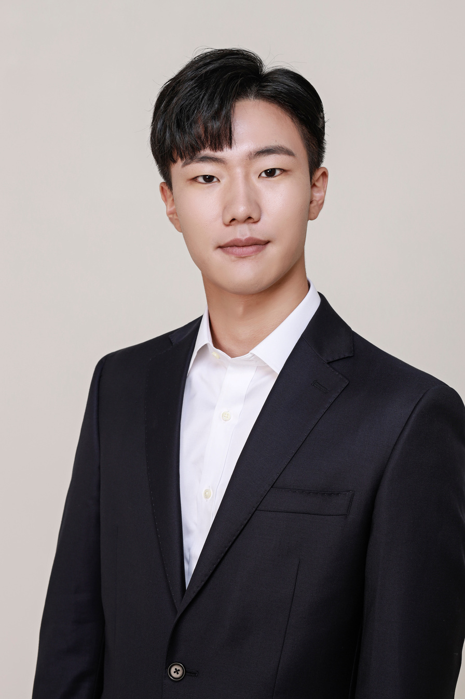

Aug 2026 — Present
Visiting Researcher
Harvard Medical School
Innovative Biomaterials Lab
Supported by an overseas research fellowship.
Engineer & researcher
Ph.D. student at Yonsei University.
Visiting researcher at Harvard Medical School.

Harvard Medical School
Innovative Biomaterials Lab
Visiting Researcher
August 2026 – Present
Aug 2026 — Present
Visiting Researcher
Innovative Biomaterials Lab
Supported by an overseas research fellowship.
2024 — Present
Graduate Researcher
Integrated M.S./Ph.D. Program
2023 — 2024
Undergraduate Research Assistant
2021 — 2023
Undergraduate Research Assistant
Accepted 22 September 2026 · DOI: 10.1002/advs.78062
K.-Y. Yook et al.
17, 5526 (2026)
T. Y. Kim, K. Son, C.-H. Moon, K.-Y. Yook, S. A. Kim, H. Ham, Y. Lee, S. I. Lee, Y. Jo, Y. Yu, D.-H. Kim, and J. Seo.
38(19), e15767 (2026)
D. Lee, S. A. Kim, B.-J. Shim, Y. Lee, T. Y. Kim, S. Park, Y. Lee, H. G. Choi, K. Son, S. B. Han, K.-Y. Yook, S. J. Kim, W.-Y. Lee, J. Seo, and J. Kim.
61, 210–228 (2026)
T. Y. Kim, W.-J. Lee, Y. Lee, S. J. Kim, S. Min, S. Chung, S. A. Kim, K.-Y. Yook, C.-H. Moon, Y. Lee, K. Park, D.-H. Kim, and J. Seo.
11(37), eadz1228 (2025)
T. Y. Kim, Y. Son, K.-Y. Yook, D. G. Lee, Y. Kim, S. J. Kim, K. Park, Y. Lee, T. K. Lee, J. J. Chung, C. Yang, S. Park, and J. Seo.
In preparation · First author
K.-Y. Yook et al.
2024 — Present
Integrated M.S./Ph.D. Program
Electrical and Electronic Engineering
2021 — 2024
Bachelor of Science
School of Integrated Technology
Recipient · Yonsei University
Program for Fostering Innovative Global Leaders in Leading-edge Industry (Advanced Materials and Rechargeable Batteries)
One-Step Solvent-Free Synthesis of an Amorphous-Oxide Percolating Liquid-Metal Paste for System-Level Stretchable Bioelectronics.
Keun-Young Yook: co-first author. Presented by Dr. T. Y. Kim, recipient of the GSSOC Outstanding Research Presentation Award.
Synergistic Mechano-Fluidic Self-Fusion of PVA modified Liquid Metal Particles for Sintering-Free Soft Electronics.
Poster presentation · K.-Y. Yook et al.
December 2025 · Boston, USA
A Simple and Additive-Free Method for Preparing Liquid Metal Paste via Sonication for Robust Interconnects in Soft Electronic Applications.
Oral presentation · K.-Y. Yook et al.
2025 · Jeju, Korea
One-step Fabrication of Highly Adhesive LM Paste: High-Resolution Printing for Soft Electronics.
Poster presentation · K.-Y. Yook et al.
STM32, ESP32, Arduino (ATtiny), PCB design, EasyEDA, KiCad
Python, C++, MATLAB, web and mobile app development
AutoCAD, Fusion 360, KeyShot, GraphPad Prism, Origin, Adobe Illustrator, ImageJ
SEM, AFM, FTIR, XPS, spin coating, 3D printing, laser cutting
Mammalian cell culture, in vivo studies (murine)
Korean, English